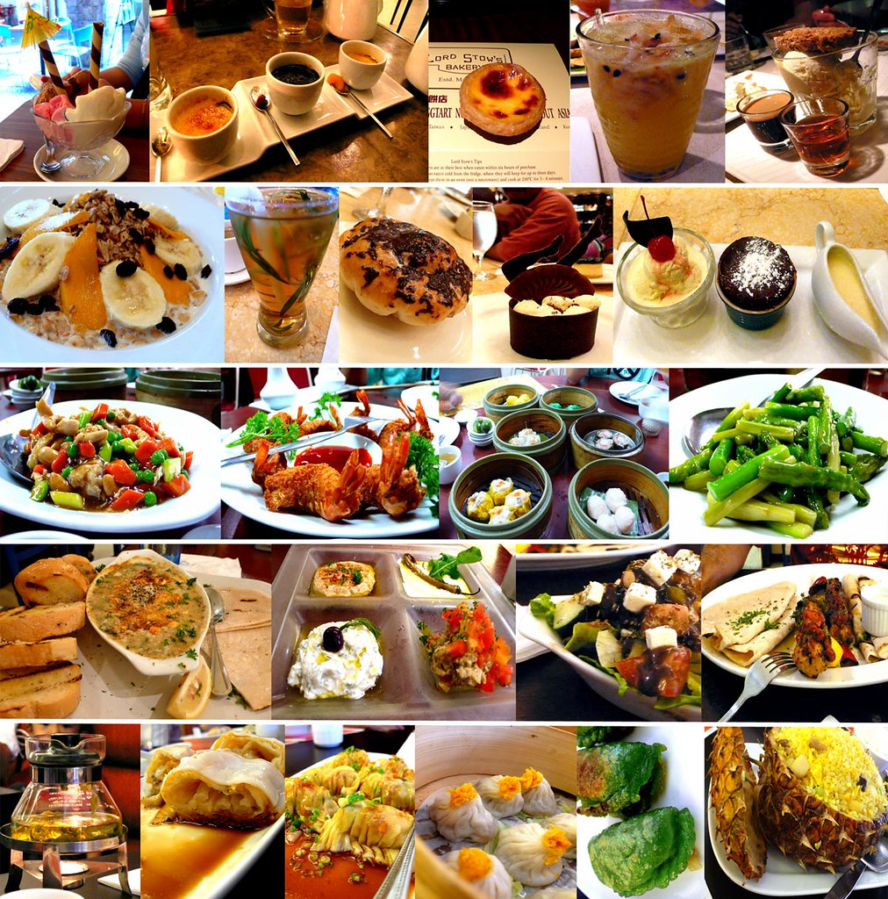
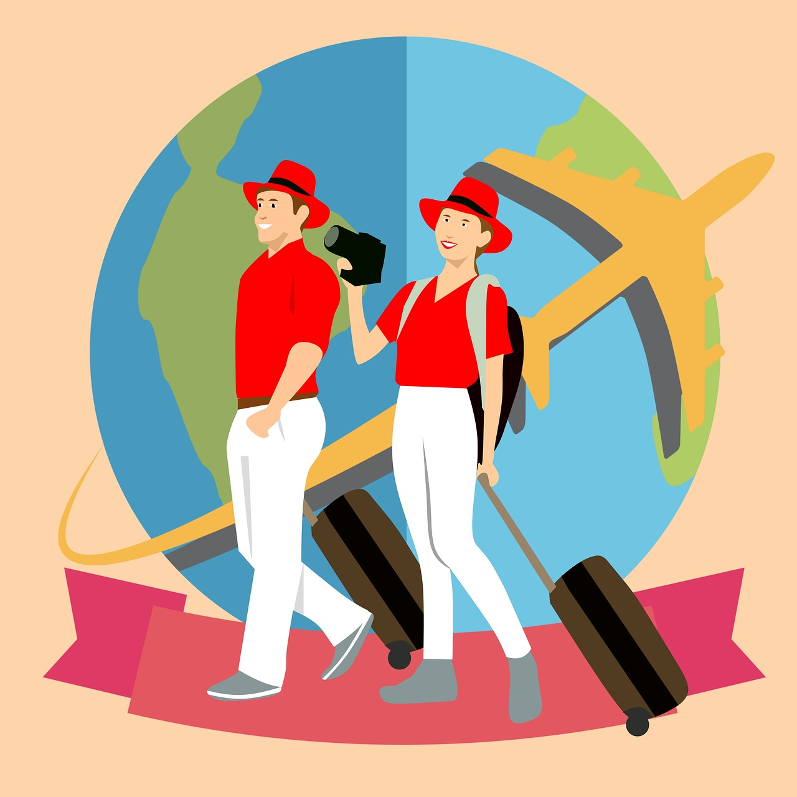

Find The Destination
Where do you want to travel? Mountains, lakes, rivers, forests, deserts, coasts, or islands? The first step of designing your travel plan is find your attractions.
Would you like to stay in a "bird nest" hanging on a cliff and enjoyed the amazing sunset and sunrise OR follow the paths in forest and found a hidden gem-like lake？
OR you prefer surfing at a Pacific Island?

The Food You Like
Treat yourself good! Chilly or sweet or saulty or juicy? Find the most existing food you want to eat.
As you know, the most delicious foods are hidden in the old communities. So, uninstall Yelp in your phone, take a bus or a walk, enjoy
the city-walk and explore your own gourmet journey!

Trusted Travel Agency
Getting tired of Expedia and Booking.com? The most trusted agency is yourself! No hidden cost, no tricks, just your own research.
I plan most of my trips by myself, because of that I am able to find really beautiful places that travel agencys don't know. You can find those places in my blogs :)
Consolates Overseas
Consolates would be the best place to look for help. If you travel by yourself, please be a bit more concious. A single foreign vistor can be bad guys' target.
If you found anything suspicious, first please report to local police station and then contact the US Cocnsolates. Check the annoucements on Consolate's homepage before traveling!
Do not travel to the countries labeled "high risk" and tell your family & friends your travel plan. Safety is ALWAYS the first concern!